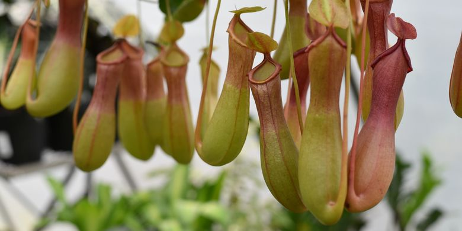
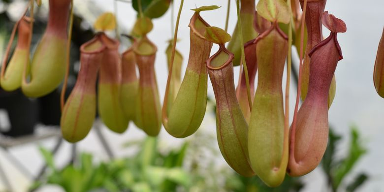

Kantong Semar

Deskripsi Umum
Kantong Semar (Nepenthes spp.) adalah tanaman karnivora unik yang memerangkap serangga menggunakan kantong berisi cairan enzimatik. Tumbuhan ini tumbuh di daerah lembap seperti hutan hujan tropis Sumatera, Kalimantan, dan Papua, dengan variasi bentuk dan warna kantong yang sangat beragam. Serangga yang terperangkap akan dicerna untuk memenuhi kebutuhan nutrisi yang tidak diperoleh dari tanah miskin hara tempat tanaman ini hidup. Keunikan bentuknya menjadikan Kantong Semar sangat dikenal dan banyak dilindungi keberadaannya.
Klasifikasi Ilmiah
| Nama Ilmiah | Nepenthes spp. |
|---|---|
| Famili | Nepenthaceae |
| Habitat | Hutan hujan tropis |
| Tipe | Karnivora |
Fakta Unik
- Menjebak serangga.
- Memiliki bentuk kantong unik.
- Beragam warna & ukuran.

 
